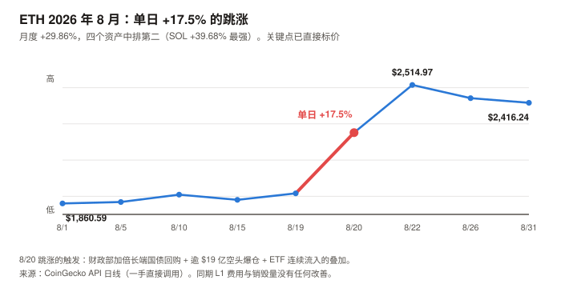
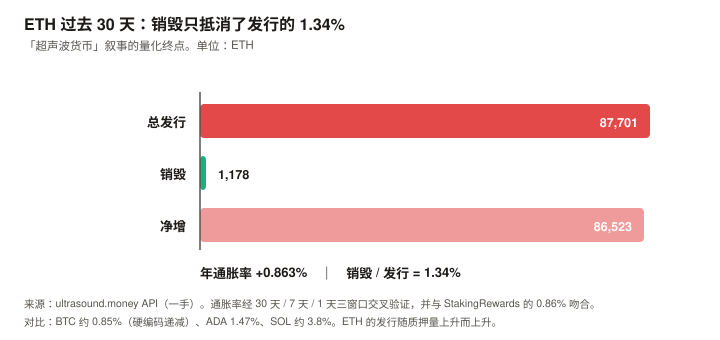
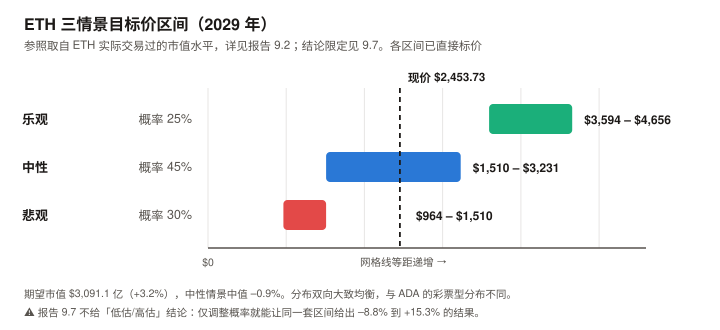

ETH / Ethereum 完整调研与分析报告
编写日期：2026 年 9 月 4 日
数据截止：2026 年 9 月 4 日（8 月完整月度数据已闭合）
研究方法：沿用 BTC / SOL / ADA 月报的分析框架。章节结构相对 SOL 版改动约三成——ETH 有真实且可精确计量的发行与销毁数据，因此新增「发行与销毁」独立章节；并把 L2 与价值捕获单列一章，因为它是理解 ETH 当前处境的第一变量。
本期为 ETH 首期报告，无上期论点可校验；本期登记的论点将在 10 月版核对。本期核心发现：
① ETH 现价 $2,453.73，市值 $2,993.9 亿（全球第 2）。ATH $4,946.05 出现在 2025 年 8 月 24 日——正好一年前，如今距其 –50.39%；年初至今 –17.4%；
② 8 月月度 +29.86%（8 月 20 日单日 +17.5%），在四个资产中排第二，低于 SOL 的 +39.68%，高于 BTC +23.62%、ADA +14.65%（统一按 8/1→8/31 口径）。从 6 月 26 日年内低点 $1,566.01 算起已反弹 +56.7%；
③ 「超声波货币」（ultrasound money）叙事已经失效，且可以被精确计量：过去 30 天全网销毁 1,178.26 ETH，同期净增发 86,522.84 ETH——销毁只抵消了发行的 1.34%。ETH 当前年通胀 +0.863%；
④ 质押收益的 96% 来自增发，不是来自网络赚到的钱：质押 APY 2.59%，其中约 2.49pp 来自新发行（对非质押者是稀释），仅约 0.10pp 来自真实费用收入；
⑤ L2 几乎不向 L1 付费：过去 30 天 L2 支付的 blob 数据费用合计仅 1.81 ETH（约 $4,436），占 L1 销毁量的 0.153%。同期 Base 一条链自己收了 $319 万手续费；
⑥ 但机构通道是四个资产里最强的：8 月为 ETH 现货 ETF 自产品站稳以来最强月份，8/17 起连续 9–10 个交易日净流入 $14.2 亿，BlackRock 的 ETHA 占 72%；ETF 总净资产 $152.3 亿，占 ETH 市值 5.09%。企业储备合计约 748 万 ETH（供应量 6.13%，含二手追踪值）；若只用 SEC 已核实的 BitMine 持仓重算则为 5.42%。本期最重要的判断：ETH 是本系列覆盖的四个资产里，唯一曾经拥有真实、可计量的持币人现金流，而这条现金流已在本期萎缩到可以忽略的资产。
用最慷慨的 50 倍市盈率计算，L1 费用只能解释当前市值的 2.1%–3.6%。其余 96% 以上，市场买的是别的东西——详见第 9 章。免责声明：本报告不构成任何投资建议。所有分析仅供研究参考，投资决策请咨询专业顾问。
核心结论摘要（一页速览）
| 维度 | 核心判断 |
|---|---|
| ETH 是什么 | 一条可编程结算层。它既不是纯货币资产（BTC），也不是单纯的高性能执行层（SOL）——它把执行外包给了 L2，自己保留结算与数据可用性。这个选择是理解本报告全部内容的起点 |
| 当前价格位置 | $2,453.73，市值 $2,993.9 亿（全球第 2）。ATH $4,946.05 恰在一年前（2025-08-24），现距其 –50.39%，YTD –17.4% |
| 8 月表现 | +29.86%，四个资产中排第二（SOL +39.68% 最强，BTC +23.62%、ADA +14.65%）。8/20 单日 +17.5%，触发因素是财政部加倍长端国债回购 + 逾 $19 亿空头爆仓 + ETF 连续流入的叠加 |
| 本期最重要的发现 | 「超声波货币」叙事已被自己的链上数据证伪。 30 天销毁 1,178 ETH vs 净增发 86,523 ETH——销毁只抵消发行的 1.34%，年通胀 +0.863%。ETH 现在的通胀率与 BTC 大致相当，但 BTC 的是硬编码递减，ETH 的取决于质押量 |
| 第二重要的发现 | 质押 APY 2.59% 里约 96% 是增发。 它是非质押者向质押者的财富转移，不是网络创造的外部现金流。真实费用只贡献约 0.10pp。这与 SOL 期的教训同源，但 ETH 这里可以精确算出来 |
| L2 的结构问题 | L2 生态 TVL $83.6 亿、Base 月费 $319 万，而 blob 路径 30 天在 L1 产生的销毁只有 $4,436（仅为 EIP-4844 以来月均 158.6 ETH 的 1.14%）。Standard Chartered 的 Geoff Kendrick 曾估算「Base 一家就从 ETH 市值里拿走了 $500 亿」——本报告不为该估算背书：$4,436 只能说明 L1 收到的少，不能区分「价值被转移走」与「这些活动本来就不会在 L1 发生」（详见 5.2） |
| 估值锚的处境 | ETH 曾是四个资产里唯一能用现金流法的。本期它也失效了——不是因为方法错，是因为分子太小：50 倍市盈率只能解释市值的 2.1%–3.6% |
| 核心多头逻辑 | 机构通道四个资产里最强（ETF 净资产占市值 5.09%、8 月创最强月）；质押型 ETF（BlackRock ETHB）提供了 BTC 没有的收益属性；企业储备达供应量 5.42%–6.13% 且靠质押产生真实营收；稳定币与 RWA 的主导结算层；Glamsterdam 目标把 gas limit 从 60M 推向 200M |
| 核心空头逻辑 | 销毁归零、通胀转正，稀缺性叙事失效；L1 费用真年同比 –73.8%（2026-08 $1,038 万 vs 2025-08 $3,959 万），16 个月序列显示为持续下台阶；blob 路径几乎不产生销毁；质押收益绝大部分靠稀释；企业储备高度集中（BitMine 一家 4%+ 供应量） |
| 与另外三个资产的关系 | BTC 是货币资产（锚：稀缺性）；SOL 是生产性资产（锚：网络收入）；ADA 是期权型（无锚）；ETH 是混合型——曾经的生产性锚已经失效，正在向「货币 + 抵押品」叙事迁移，而这次迁移尚未完成 |
| 风险等级 | 低于 SOL 与 ADA，高于 BTC。流动性与机构接受度是四个资产里仅次于 BTC 的，但叙事正处在切换中途，这是它独有的不确定性 |
1. Ethereum 的起源与设计取舍
1.1 一个「不只是钱」的构想
2013 年，19 岁的 Vitalik Buterin 提出一个论点：比特币的脚本语言太受限，无法表达任意逻辑；应该有一条链，让开发者能在上面部署图灵完备的程序。2015 年 7 月主网上线。
与 BTC 的根本分歧不在技术，在目的：
| Bitcoin | Ethereum | |
|---|---|---|
| 目标 | 点对点电子现金 | 可编程的世界状态机 |
| 代币角色 | 就是资产本身 | 是资产，也是使用网络的燃料 |
| 变更哲学 | 极端保守，宁可不改 | 持续升级，路线图跨十余年 |
| 供应规则 | 硬编码 2,100 万，不可改 | 没有硬上限，发行规则随共识升级变化 |
最后一行是理解 ETH 估值的关键。 ETH 没有供应上限——它的稀缺性不来自代码承诺，而来自发行与销毁的动态平衡。
这个平衡在 2021–2023 年一度产生净通缩（「超声波货币」叙事的由来），而本报告第 4 章将用一手链上数据说明它现在处于什么状态。
1.2 三次改变资产性质的升级
| 升级 | 时间 | 改变了什么 |
|---|---|---|
| EIP-1559 | 2021-08-05 | 引入 base fee 销毁。从此每笔交易都会永久销毁一部分 ETH——这是「ETH 可能通缩」叙事的起点 |
| The Merge（合并） | 2022-09-15 | 从工作量证明（PoW，挖矿）转为权益证明（PoS，质押）。发行量骤降约 90%，且 ETH 从此成为有收益的资产 |
| EIP-4844（Dencun） | 2024-03 | 引入 blob —— 给 L2 的廉价数据通道。L2 成本降低约两个数量级，但 L1 从 L2 身上赚到的钱也同步塌陷（见第 5 章） |
再加上一次容量升级：Fusaka 于 2025 年 12 月 3 日激活，把 L1 区块 gas limit 的默认值标准化为 60M（此前社区已从 30M 提升）；同时引入 EIP-7825，规定单笔交易 gas 上限 1,678 万，防止单笔交易占满整个区块。
一个必须点明的因果链：gas limit 从 30M 翻倍到 60M，意味着区块空间供给翻倍。
在需求没有同步翻倍的情况下，费用价格必然下跌——本报告数据截止时 base fee 仅 0.3115 gwei（历史上 ETH 常在 20–100 gwei 区间）。
这是 ETH 主动做出的取舍：用更低的费用换取更强的可用性，代价是销毁量与稀缺性叙事。 第 4 章会给出这个代价的确切数字。
1.3 ETH 代币的四重角色
| 角色 | 说明 | 本期状态 |
|---|---|---|
| 燃料（gas） | 支付 L1 交易与合约执行 | ⚠️ 需求萎缩，L1 费用真年同比 –73.8% |
| 质押品 | 质押换取出块权与收益，APY 2.59% | ✅ 质押率 35.08%，4,280 万 ETH |
| DeFi 抵押品 | 借贷、稳定币、再质押的底层资产 | ✅ L1 TVL $499.0 亿，四链中最高 |
| 储备资产 | ETF 与企业资产负债表持有 | ✅ 本期最强的一环，见第 6 章 |
注意四者的分化：作为燃料的需求在萎缩，作为抵押品与储备资产的需求在增强。
ETH 正在从「使用型代币」转向「金融资产」，而这两种身份对应的估值方法完全不同。这是第 9 章的核心难题。
2. ETH 的发展阶段划分
阶段一：世界计算机的承诺（2015–2017）
- 2015 年 7 月主网（Frontier）上线
- 2016 年 The DAO 事件：约 360 万 ETH 被利用漏洞取走，社区选择硬分叉回滚，导致链分裂为 ETH 与 ETC。这次事件确立了「社会共识可以覆盖代码」的先例，至今仍是 ETH 与 BTC 哲学差异的分水岭
- 2017 年 ICO 狂潮，ETH 成为发币的默认平台
阶段二：DeFi 之夏与 gas 危机（2018–2021）
- 2020 年 DeFi 爆发，Uniswap、Aave、Compound 把 ETH 变成金融基础设施
- 代价是费用失控：高峰期单笔转账成本可达数十美元，L1 被自己的成功挤爆
- 这个痛点直接催生了 L2 路线——把执行搬走，L1 只做结算
- 2021-08-05 EIP-1559 上线，销毁机制启动
阶段三：合并与「超声波货币」（2021–2023）
- 2022-09-15 The Merge，PoS 切换成功，发行量降约 90%
- 在高 gas 需求下，销毁一度超过发行，ETH 出现净通缩——「ultrasound money」叙事达到顶峰
- 这一时期 ETH 确实是唯一有真实现金流、且现金流为正向通缩的主流加密资产
阶段四：L2 落地与费用外流（2024–2025）
- 2024-03 EIP-4844（Dencun） 上线 blob，L2 成本降约两个数量级
- L2 生态起飞：Base、Arbitrum 等承接了绝大多数交易活动
- 但 L1 的费用收入与销毁量同步塌陷——这是本报告第 5 章的主题
- 2025-08-24 ETH 创下历史最高价 $4,946.05
阶段五：叙事切换与机构接管（2025.12– 至今）
| 时点 | 事件 |
|---|---|
| 2025-08-24 | ETH 触及 ATH $4,946.05 |
| 2025-12-03 | Fusaka 升级激活，L1 gas limit 默认标准化为 60M |
| 2026-01-15 | 年内最高价 $3,351.82（市值 $4,045 亿） |
| 2026-03-12 | BlackRock 推出 ETHB——质押型 ETH ETF，按月分配收益 |
| 2026-04-20 | BitMine 按 SEC 文件披露持有 4,976,485 ETH，占供应量 4.12% |
| 2026-06-26 | 年内最低价 $1,566.01（市值 $1,890 亿） |
| 2026-07 | ETH ETF 单月净流入 $3.65 亿，首次超过同期 BTC ETF |
| 2026-08-20 | 单日 +17.5%：财政部加倍长端国债回购 + 逾 $19 亿空头爆仓 + ETF 连续流入 |
| 2026-08 | ETF 自 8/17 起连续 9–10 个交易日净流入 $14.2 亿，为产品站稳以来最强月份 |
阶段五的定性：ETH 的价格支撑正在从「网络使用」切换到「金融配置」。
一边是 L1 费用真年同比 –73.8%、销毁近乎归零；另一边是 ETF 与企业储备创纪录。
这两股力量指向完全不同的估值方法，而市场目前同时定价了它们。
3. ETH 当前现状分析
3.1 价格与市场
| 指标 | 数值 | 口径 |
|---|---|---|
| 现价 | $2,453.73 | CoinGecko API，2026-09-04 15:27 UTC |
| 市值 | $2,993.9 亿（全球第 2） | 同上 |
| 24 小时成交额 | $194.89 亿 | 同上 |
| 流通量 | 1.22018 亿 ETH（无供应上限） | 同上 |
| 历史最高价 | $4,946.05（2025-08-24） | 同上 |
| 距 ATH | –50.39% | 同上 |
| 近 30 日 | +30.89% | 同上 |
| 近 60 日 | +40.23% | 同上 |
| 近 200 日 | +23.99% | 同上 |
| 近 1 年 | –43.50% | 同上 |
2026 年内轨迹（CoinGecko 日线，一手）：
| 时点 | 价格 | 市值 |
|---|---|---|
| 1/1 | $2,970.03 | $3,585 亿 |
| 1/15（年内最高） | $3,351.82 | $4,045 亿 |
| 3/1 | $1,966.72 | $2,374 亿 |
| 5/1 | $2,256.95 | $2,724 亿 |
| 6/26（年内最低） | $1,566.01 | $1,890 亿 |
| 7/1 | $1,569.83 | $1,895 亿 |
| 8/1 | $1,860.59 | $2,245 亿 |
| 8/31 | $2,416.24 | $2,916 亿 |
| 指标 | 数值 |
|---|---|
| 年初至今（YTD） | –17.4% |
| 从 6/26 年内低点反弹 | +56.7% |
| 距 1/15 年内高点 | –26.8% |
2026 年 8 月月度表现：
| 项目 | 数值 |
|---|---|
| 月初（8/1）→ 月末（8/31） | $1,860.59 → $2,416.24，+29.86% |
| 月内最低 / 最高 | $1,843.44（8/2）/ $2,514.97（8/22） |
| 月内振幅 | 36.4% |
| 最猛的一段 | 8/19 $1,916.40 → 8/20 $2,251.73，单日 +17.5%；至 8/22 累计 +31.2% |

8 月 20 日单日 +17.5% 的归因（多因素叠加，非单一原因）：
| 因素 | 说明 |
|---|---|
| 宏观触发 | 美国财政部宣布至少加倍其长端流动性支持国债回购规模（至每次 $40 亿以上），长端收益率大幅下行，美元指数跌约 0.8% |
| 空头挤压 | 24 小时内加密市场空头爆仓逾 $19 亿，ETH 占其中主要份额 |
| ETF 流入 | 截至 8/21 的五个交易日净流入 $6.972 亿，为 2026 年最强周 |
| 流动性结构 | 大量 ETH 锁定在 L2、流动性质押与再质押协议中，交易所现货深度处于低位，放大了上行滑点（此项为媒体分析，本报告未独立验证交易所余额数据） |
与本系列其他资产的横向印证（全部统一为 8/1→8/31 的月度口径，CoinGecko 一手）：
| 资产 | 2026 年 8 月月度涨幅 |
|---|---|
| SOL | +39.68% |
| ETH | +29.86% |
| BTC | +23.62% |
| ADA | +14.65% |
⚠️ 本段在发布前审查中被更正过，且更正推翻了初稿的结论。
初稿称「ETH 涨幅最大」，这是错的——它把 ETH 的月度涨幅（+29.86%）与 SOL 的「近 30 天」涨幅（+37.4%）混用比较。
统一口径后 SOL +39.68% 最强，ETH 排第二。修正后能说的是：四个资产同源上涨，涨幅大致按 beta 排序（SOL > ETH > BTC > ADA）。
不能说的是「市场明显更愿意买 ETH」——ETH 排在第二，这个排序说明的是风险敞口大小，不是相对偏好。
3.2 L1 活动与费用：一组正在萎缩的数字
手续费（DefiLlama API，一手；口径区分见下）：
| 周期 | L1 协议层费用 |
|---|---|
| 24 小时 | $418,671 |
| 7 天 | $2,329,524 |
| 30 天 | $10,515,111 |
| 过去 12 个月 | $214,704,808 |
| 口径 | 30 天费用 | 归属 |
|---|---|---|
| L1 协议层 | $10,515,111 | 其中 base fee 部分销毁（回馈全体持有者），优先费与 MEV 归验证者 |
| 生态合计（含应用层协议） | $295,190,785 | 归各应用协议，不流向 ETH 持有者 |
生态合计的主要构成：Lido（流动性质押）$4,182 万、Sky Lending $2,713 万、Aave V3 $2,526 万、Ethena USDe $1,995 万、Binance staked ETH $1,657 万——L1 链本身的 $1,051 万只占生态合计的 3.56%。
口径纪律（沿用 ADA 期的教训）：用 L1 费衡量 ETH 代币的价值捕获，用生态合计衡量生态活跃度。
混用两者是口径偷换。注意 ETH 的生态合计里排名前列的多是质押与借贷协议，它们的收入建立在 ETH 作为抵押品的角色上——这本身是 ETH 与 ADA 的实质差异。
最重要的一个趋势：
⚠️ 本节的口径在发布前审查中被更正过，更正后的结论比初稿严重得多。
初稿用「最近 30 天年化 vs 过去 12 个月总额」算出 –40.4%，并称之为「同比」。
这不是同比——它比较的是当前月度运行率与包含该月在内的 12 个月月均值，且未控制价格与季节性。
下表改用 DefiLlama 的月度费用序列做真正的年同比。
ETH L1 月度费用序列（DefiLlama API 日度数据按月聚合，一手）：
| 月份 | L1 费用 | 月份 | L1 费用 |
|---|---|---|---|
| 2025-06 | $38,842,491 | 2026-01 | $13,960,819 |
| 2025-07 | $49,497,182 | 2026-02 | $15,187,083 |
| 2025-08 | $39,587,105 | 2026-03 | $10,580,034 |
| 2025-09 | $35,661,007 | 2026-04 | $24,425,831 |
| 2025-10 | $41,181,773 | 2026-05 | $16,579,471 |
| 2025-11 | $23,438,885 | 2026-06 | $10,777,326 |
| 2025-12 | $11,470,440 | 2026-07 | $8,314,396 |
| — | — | 2026-08 | $10,382,162 |
| 比较 | 结果 |
|---|---|
| 真年同比（2026-08 vs 2025-08） | $10,382,162 vs $39,587,105 = –73.8% |
| 2026-08 相对 2025-07 峰值 | –79.0% |
修正后的结论更强，不是更弱：L1 费用真同比萎缩 –73.8%，远超初稿错算的 –40.4%。
而且 16 个月的连续序列证明这是趋势而非噪声——2025-10 之后逐月下台阶，2025-12 起再未回到 $2,500 万以上。
这是第 5 章要解释的结构性现象：L2 承接了交易，Fusaka 又把 L1 区块空间供给翻倍，需求外流与供给增加同时发生。
用于估值的年化口径（第 9 章使用）：
| 口径 | 年化 L1 费用 | 市值 / 费用 |
|---|---|---|
| 过去 12 个月实际 | $214,704,808 | 1,394 倍 |
| 最近 30 天年化 | $127,933,850 | 2,340 倍 |
当前 base fee 水平：0.3115 gwei（ultrasound.money 一手快照）。作为参照，ETH 在 2021 年 DeFi 高峰期常处于 20–100 gwei 区间。
3.3 质押：规模巨大，但收益来自哪里？
| 指标 | 数值 | 来源 |
|---|---|---|
| 质押总量 | 4,280 万 ETH | StakingRewards（一手抓取） |
| 质押率 | 35.08% | 同上 |
| 质押 APY | 2.59% | 同上 |
| 通胀率 | 0.86% | 同上 |
| 活跃验证者 | 795,000（StakingRewards 口径） | 同上。⚠️ Beacon Chain 链上记录 8 月下旬约 903,000，两源存在分歧，本报告未能一手核实 |
三源交叉验证通过：StakingRewards 报告的通胀率 0.86%，与本报告用 ultrasound.money 的供应量序列独立算出的 0.863% 一致（算法见 4.2）。这个数字是可靠的。
验证者集合的规模：无论按 StakingRewards 的 795,000 还是 Beacon Chain 的约 903,000，这都是所有权益证明网络中最大的验证者集合——这一点在两个口径下都成立。
⚠️ 但初稿据此推出「ETH 去中心化程度显著领先」，这个推理不成立，已删除。
初稿拿 ETH 的验证者数量去比 SOL 的 Nakamoto 系数——前者是分子，后者是集中度比率，两者不可比。
这违反了本报告 3.2 节自己立下的口径纪律。更关键的是方向可能相反：ETH 的验证者是以 32 ETH 为单位的记账凭证，单一运营方可以控制其中数十万个。
本报告 3.2 节自己列出「Lido（流动性质押）$4,182 万」为生态费用第一名——它的规模本身就说明质押高度集中于少数运营方。
本报告未获取 ETH 的 Nakamoto 系数或质押运营方集中度数据，因此不对 ETH 与 SOL 的去中心化程度做任何排序。
但收益的来源必须拆开看——这是第 4.3 节的内容，也是本期第二重要的发现。
3.4 生态数据：TVL 与 L2 分布
TVL 对照（DefiLlama API，一手）：
| 链 | TVL |
|---|---|
| Ethereum（L1） | $499.0 亿 |
| Base | $56.1 亿 |
| Arbitrum | $14.3 亿 |
| Polygon | $8.1 亿 |
| OP Mainnet | $4.4 亿 |
| Scroll / Linea / Blast | 各 $0.1–0.3 亿 |
| 主要 L2 合计 | $83.6 亿（为 L1 的 16.8%） |
横向对照（同一 API 快照）：Solana $58.9 亿、BSC $56.2 亿、Tron $54.2 亿。
ETH L1 的 $499.0 亿，是第二名的约 8.5 倍——这是 ETH 最稳固的护城河，也是它作为抵押品层地位的直接证据。
3.5 宏观环境
ETH 与另外三个资产共享同一套宏观驱动。
| 因素 | 状态（9 月初） | 影响 |
|---|---|---|
| 联邦基金利率 | 3.50–3.75% | — |
| 9 月加息概率 | 65.9%（CME FedWatch，8/31） | 重大利空 |
| PCE 通胀 | 3.7%（12 个月）/ 4.1%（6 个月） | 支持加息 |
| 美联储主席立场 | Kevin Warsh 在 Jackson Hole 表态鹰派 | 偏空 |
| 10 年期美债 | 4.79% | 直接与 ETH 的 2.59% 质押收益竞争 |
| 美元指数 | >99.7 | 压制风险资产 |
| 8 月流动性事件 | 财政部加倍长端国债回购 | 8 月普涨的共同触发因素 |
一个对 ETH 特别不利的对照：10 年期美债 4.79% vs ETH 质押 2.59%。
无风险利率接近 ETH 质押收益的两倍，而 ETH 还要承担全部价格波动。
这意味着当前买 ETH 的人不是为了那 2.59% 的收益——他们买的是价格上涨的可能性。第 9 章会回到这一点。
4. 发行与销毁：「超声波货币」叙事的终结（本期核心章之一）
本章替代 BTC 版的「减半周期」。ETH 没有减半，也没有供应上限——它的稀缺性完全取决于发行与销毁的动态平衡。
本章的全部数据来自 ultrasound.money 的公开 API（一手直接调用），并与 StakingRewards 交叉验证。
4.1 机制：钱从哪来，到哪去
| 方向 | 机制 | 受益方 |
|---|---|---|
| 发行（+） | 每个 epoch 向验证者发放质押奖励，发行量随质押总量增加而增加 | 质押者 |
| 销毁（–） | EIP-1559 的 base fee 全额销毁；EIP-4844 的 blob base fee 也销毁 | 全体持有者（供应减少） |
| 优先费 / MEV | 用户为插队支付的额外费用，不销毁 | 验证者 |
必须分清「销毁」与「优先费」——这是 SOL 期学到的教训在 ETH 上的对应：
只有销毁是回馈全体持有者的（它减少供应，抬高每一枚的相对价值）；
优先费和 MEV 归验证者，对不质押的持有者没有任何回报。
4.2 一手数据：ETH 现在是通胀的
供应量净变化（ultrasound.money supply-over-time，一手直接调用）：
| 窗口 | 起点 | 终点 | 净变化 | 年化 | 年通胀率 |
|---|---|---|---|---|---|
| 30 天 | 121,926,338.57（8/05） | 122,012,861.41（9/04） | +86,522.84 ETH | 1,052,695 ETH | +0.863% |
| 7 天 | 121,992,512.14（8/28） | 同上 | +20,349.28 ETH | 1,061,070 ETH | +0.870% |
| 1 天 | 122,009,965.95（9/03） | 122,012,849.30 | +2,883.35 ETH | 1,052,423 ETH | +0.863% |
三个独立时间窗口给出的年通胀率高度一致（0.863%–0.870%），且与 StakingRewards 的 0.86% 吻合。
销毁量（ultrasound.money fees/all，一手）：
| 周期 | 销毁量 |
|---|---|
| 24 小时 | 44.41 ETH |
| 7 天 | 208.60 ETH |
| 30 天 | 1,178.26 ETH ≈ $289 万 |
| 自 EIP-1559 上线累计 | 4,638,197.96 ETH |
把两者放在一起，就是本期最重要的一张表：
| 30 天 | ETH |
|---|---|
| 总发行 | 87,701 |
| 销毁 | 1,178 |
| 净增 | +86,523 |
| 销毁抵消了发行的 | 1.34% |

「超声波货币」叙事到此为止。 它成立于 2021–2023 年的高 gas 环境，当时销毁一度超过发行。
现在销毁只抵消发行的 1.34%，ETH 是一个年通胀 0.863% 的资产。
长周期视角（同一数据源）：
| 起点 | 供应量 | 至今变化 |
|---|---|---|
| 2021-08-06（EIP-1559 上线） | 117,205,464.83 | +4.10% |
| 2022-09-15（The Merge） | 120,521,140.92 | +1.24%（年均约 +0.31%） |
公允地说：合并四年来 ETH 总供应只增加 1.24%，这个纪律性仍然远好于绝大多数 PoS 资产（SOL 约 3.8%、ADA 1.47%）。
但它与 BTC 的约 0.85% 已经在同一量级——而 BTC 的发行是硬编码递减的，ETH 的取决于质押量，质押越多，发行越多。
「ETH 比 BTC 更稀缺」这个论断，在当前数据下不成立。
4.3 质押收益的真实来源：绝大部分是增发
⚠️ 本节的论证方法在发布前审查中被指出有缺陷，已改写。
初稿声称用「两条独立路径互相验证」得出「96% 来自增发」。这两条路径并不独立，且都低估了 MEV——
详见下方的方法缺陷说明。结论方向不变，但精度主张已撤回。
主推导（发行侧）：
| 步骤 | 计算 | 结果 |
|---|---|---|
| 年化总发行 | 87,701 ETH × 365/30 | 1,067,030 ETH |
| 质押总量 | StakingRewards | 4,280 万 ETH |
| 仅由发行贡献的收益率 | 1,067,030 ÷ 42,800,000 | 约 2.49% |
| StakingRewards 报告的实际 APY | — | 2.59% |
| 差额（隐含的执行层收益） | 2.59% – 2.49% | 约 0.10pp |
这个推导的三处缺陷，必须和结论一起读：
- 两个数字口径不同。 分子（发行量）来自 30 天供应量变化，分母口径（APY）是 StakingRewards 的短窗口年化综合收益（含共识层 + 优先费 + MEV）。用一个口径的值去减另一个口径的值，差额的含义不严格。
- MEV 被系统性低估。 大量 MEV 通过 MEV-Boost 的 builder → proposer 直接转账支付，不体现在链上 gas fee 里。本报告初稿曾用「L1 费用减销毁」做第二条路径反推出 0.088pp，但那条路径按定义就抓不到 builder 支付，因此它不是对主推导的独立验证，只是同一盲区的重复。
- 验证者数量存在来源分歧。 StakingRewards 报 795,000，而 Beacon Chain 链上记录在 8 月下旬已达 约 903,000。本报告未能一手核实（beaconcha.in API 需付费密钥），该分歧不影响本节结论的方向，但说明质押侧的数据一致性弱于发行侧。
因此，本报告能够负责任给出的结论是：
质押 APY 2.59% 中，绝大部分（约 2.49pp）来自新发行；来自网络真实费用收入的部分很小。
本报告不再声称「精确 96%」——精确比例取决于 MEV 如何计量，而本报告未能独立测量 MEV。
（公开的第三方收益分拆数据同样显示共识层占绝大多数，但那是外部来源，不是本报告算出来的。）方向性结论不受影响：新发行不是外部现金流，它是从不质押的持有者向质押者的财富转移。
对整个 ETH 持有者群体而言，这部分收益净额为零——它只改变分配，不创造价值。这与 SOL 8 月版报告的核心教训同源（网络毛收入 ≠ 持币人现金流）。
但 ETH 这里比 SOL 更容易说清楚，因为发行量与销毁量链上可查——只有 MEV 那一块是黑箱。
这个发现的实际含义：
- 对质押者：2.59% 的名义收益里，大部分是稀释别人得来的，但只要你质押，你就在得到的一侧
- 对不质押的持有者（包括大部分 ETF 持有人）：你每年被稀释约 0.86%，且没有任何补偿
- 这解释了为什么 BlackRock 要推出质押型 ETF（ETHB）——不质押的 ETF 结构对持有人是净损失的
5. L2 与价值捕获：ETH 最根本的结构问题（本期核心章之二）
本章是 ETH 独有的，另外三个资产都没有对应章节。它回答一个问题：
ETH 把执行外包给了 L2，那么 L2 赚的钱，有多少回到了 ETH？
5.1 一手数据：L2 付给 L1 的钱少到可以忽略
⚠️ 本节的口径在发布前审查中被更正过，且更正削弱了初稿的论断强度。
初稿称「L2 每月只付给 L1 四千多美元」，用的是 blob base fee 的销毁量。
这个数字只是 L2 向 L1 支付的一个分项，不是全部——L2 还通过 blob 交易的执行费与优先费、
calldata、状态提交、证明验证等路径向 L1 付费。本报告未能获得完整的 L2→L1 成本分解
（L2BEAT 与 Dune 提供该口径，但其 API 均需付费密钥，本期无法一手取得）。
因此下面的数字只能证明「blob 这条路径几乎不产生销毁」，不能证明「L2 总共只付了这么多」。
L2 通过 blob 路径向 L1 支付并被销毁的部分（ultrasound.money blobFeeBurns，一手）：
| 周期 | blob 销毁量 | 折美元 |
|---|---|---|
| 24 小时 | 0.0857 ETH | $210 |
| 7 天 | 0.3243 ETH | $796 |
| 30 天 | 1.8079 ETH | $4,436 |
| 自 EIP-4844 上线累计 | 4,719.20 ETH | $1,158 万 |
对照同期各 L2 自己收到的费用（DefiLlama API，一手）：
| 链 | 30 天费用 | 说明 |
|---|---|---|
| Ethereum L1 | $10,515,111 | 基准 |
| Base | $3,191,504 | L2（OP Stack rollup） |
| Arbitrum | $375,469 | L2 |
| Linea | $43,427 | L2 |
| Scroll / Blast | 各 $1,081–1,593 | L2 |
⚠️ 初稿把 Polygon（30 天费用 $2,146,935）计入了 L2 对比，这是错的——Polygon PoS 按其官方文档定义是 sidechain，不是 rollup，它有自己的验证者集合与安全模型，不依赖以太坊结算。已从本节移除。
修正后能够成立的结论，比初稿窄：
| 金额 | |
|---|---|
| Base 一条链 30 天自己收到的手续费 | $3,191,504 |
| 全部 blob 路径 30 天在 L1 产生的销毁 | $4,436 |
| blob 销毁占 L1 总销毁的比例 | 0.153% |
能说的是：blob 这条路径当前几乎不为 ETH 产生任何销毁。
不能说的是：「L2 总共只付给 L1 四千多美元」。L2 还有 calldata、状态提交、证明验证等付费路径，本报告未能测量（L2BEAT 与 Dune 提供该分解，但其 API 均需付费密钥）。
初稿据此推出的「L2 收 570 万、只回流四千」是口径偷换，已删除。
还有一个初稿完全漏掉的对照，它改变了这件事的性质：
| 口径 | blob 销毁 |
|---|---|
| EIP-4844 上线（2024-03）至今累计 | 4,719.20 ETH（约 29.8 个月） |
| 折合历史月均 | 约 158.6 ETH |
| 最近 30 天 | 1.8079 ETH |
| 当前为历史月均的 | 1.14%（即塌陷约 88 倍） |
这说明 blob 收入不是「一直就这么低」，而是「近期塌下来的」。
初稿把一个近期发生的价格现象，讲成了 L2 的长期行为特征。而塌陷的原因，本报告未能确定。 至少有两种互斥的解释：
① 需求侧——L2 活动本身减少或迁移；
② 供给侧——blob 目标数量上调后供给增加，blob base fee 触及地板价。
5.3 节对 L1 gas 恰恰做了供给侧分析（Fusaka 把 gas limit 翻倍），却没有对 blob 做同样的分析。这是本报告的一处推理不一致，在此明确标出。
两种解释的政策含义完全相反：前者是结构性的，后者是可逆的价格现象。
5.2 这是不是设计意图？必须公平地讲两面
必须承认的是：这在很大程度上是有意为之，不是失败。
EIP-4844 的明确目标就是把 L2 成本降低数个数量级。它成功了。如果 blob 很贵，L2 就无法提供低费用体验，用户会流向别的链。ETH 用 L1 收入换取了生态规模，这是一个战略选择。
支持这个选择的证据：
- L1 TVL $499.0 亿，是第二名（Solana $58.9 亿）的 8.5 倍
- 稳定币与代币化资产的主要结算层地位稳固
- 质押安全预算规模是全行业最大（795,000–903,000 个验证者，两源有分歧）
反对这个选择的证据：
- L1 费用真年同比 –73.8%
- 销毁只抵消发行的 1.34%，稀缺性叙事失效
- Standard Chartered 的分析师 Geoff Kendrick 曾估算，Base 一家就从 ETH 的市值中拿走了约 $500 亿，并据此在 2025 年 3 月将年底目标从 $10,000 下调至 $4,000，理由是 L2 造成的「结构性衰退」
本报告的立场：这两面都是真的，它们不矛盾。
ETH 确实换来了生态规模，也确实牺牲了代币的直接价值捕获。
争论的实质不是「哪个说法对」，而是「生态规模最终会不会转化为代币价值」——这个问题目前没有答案，第 9 章会把它作为情景分歧的核心。
5.3 供给侧的另一半：Fusaka 把 L1 空间翻倍了
讨论 L1 费用下跌时，只讲 L2 分流是不完整的。
2025 年 12 月 3 日 Fusaka 激活，把 L1 区块 gas limit 的默认值标准化为 60M（社区此前已从 30M 提升）。这意味着区块空间供给翻倍。
简单的供需逻辑：需求外流（L2 承接）+ 供给翻倍（gas limit 60M）同时发生，
费用价格下跌是必然结果。当前 base fee 0.3115 gwei。所以 L1 费用萎缩至少有两个原因，而本报告无法定量拆分二者的贡献。 这是一处明确的分析局限。
下一步会让这个问题更尖锐：下一次重大升级 Glamsterdam 通过 EIP-7928（BALs）把 gas limit 目标推向 200M。
如果 60M 已经让 base fee 跌到 0.31 gwei，200M 会发生什么？
多头的回答是「更多交易量会补上」；空头的回答是「单价还会跌」。
这是本报告登记的核心待验论点之一（E8-2）。
6. 机构通道与持有者结构
这是 ETH 四个资产中最强的一环，与第 4、5 章的负面结论形成直接张力。本章不回避这个张力。
6.1 ETF：8 月是产品站稳以来最强的一个月
| 指标 | 数值 |
|---|---|
| 8 月连续净流入 | 自 8/17 起 9–10 个交易日累计 $14.2 亿 |
| 其中 BlackRock ETHA | 约 $10.2 亿（占 72%） |
| 截至 8/21 的五个交易日 | $6.972 亿（2026 年最强周） |
| 8/27 单日 | $2.258 亿（2025-10-28 以来最强单日） |
| ETF 总净资产 | $152.3 亿 |
| 占 ETH 市值 | 5.09% |
| 7 月净流入 | $3.65 亿，首次超过同期 BTC ETF |
一个结构性新事物：BlackRock 于 2026 年 3 月 12 日推出 ETHB——质押型 ETH ETF，按月分配质押收益。
为什么这件事重要：结合 4.3 节的结论——不质押的持有者每年被稀释约 0.86%。
非质押型 ETF 让持有人承担全部稀释却拿不到任何补偿；质押型 ETF 修复了这个缺陷。
这也是 ETH 相对 BTC 的核心差异化：ETH 可以质押生息，BTC 不能。资金在两者之间轮动时，收益率差是真实的驱动因素。
与另外三个资产的对照：
| 资产 | 现货 ETF 状态 |
|---|---|
| BTC | 成熟，规模最大 |
| ETH | 成熟，且有质押型产品；ETF 净资产占市值 5.09% |
| SOL | 已上市，8 月创最佳月度流入 |
| ADA | 零份在申请，Grayscale 于 8/7 撤回 |
6.2 企业储备：规模巨大，集中度也巨大
| 公司 | ETH 持仓 | 核实状态 |
|---|---|---|
| BitMine Immersion（NYSE: BMNR） | 4,976,485 ETH（占供应量 4.12%，按当时 1.207 亿计） | ✅ SEC 文件一手核实（2026-04-20），总加密+现金 $129 亿 |
| BitMine（当前追踪值） | 5,847,611 ETH | ⚠️ 二手追踪器，未一手核实 |
| SharpLink（SBET） | 888,938 ETH | ⚠️ 二手 |
| Dynamix（ETHM） | 496,712 ETH | ⚠️ 二手 |
| Coinbase（COIN） | 150,193 ETH | ⚠️ 二手 |
| Galaxy Digital（GLXY） | 97,764 ETH | ⚠️ 二手 |
| 合计（含二手追踪值） | 约 748 万 ETH ≈ 供应量 6.13% | ⚠️ |
| 合计（仅用 SEC 已核实的 BitMine 值） | 约 661 万 ETH ≈ 供应量 5.42% | ✅/⚠️ 混合 |
BitMine 的公开目标是「Alchemy of 5%」——持有 ETH 供应量的 5%。按 SEC 4 月文件，它在 9 个月内已完成该目标的 82%。SharpLink 同样宣称最终目标为 5%。
一个与 BTC / SOL 储备公司不同的关键点：
SharpLink 2026 年初季度营收 $1,210 万，几乎全部来自质押，而一年前不足 $100 万。
ETH 储备公司持有的是生息资产，BTC 储备公司不是。 这让它们的商业模式在结构上更能自洽。
但集中度风险必须点明：
BitMine 一家持有约 4%–4.8% 的 ETH 供应量。这是本系列覆盖的四个资产中，单一实体持仓占比最高的。
SOL 8 月版记录过储备公司模式的风险如何兑现——头部公司 Upexi 股价较高点跌去 96%，
而其归因是发行溢价崩塌（净资产 +63% 而股价 –96%），不是杠杆。本报告不预测 BitMine 会发生什么——它的 mNAV、负债结构与融资方式本期未获取，这是一处证据缺口。
但「单一实体持有 4%+ 流通供应」这个事实本身就是风险敞口，无论该公司经营状况如何。
6.3 持有者结构小结
| 类别 | 规模 | 占流通量 |
|---|---|---|
| 质押锁定 | 4,280 万 ETH | 35.08% |
| ETF 持有 | $152.3 亿 | 5.09% |
| 企业储备 | 661 万–748 万 ETH | 5.42%–6.13%（视是否采用二手追踪值） |
三者存在部分重叠（ETF 与企业储备中有一部分已质押），不可简单相加。
但方向是清楚的：ETH 的流通盘正在被结构性锁定，这是 8 月上涨中「现货深度不足放大滑点」说法的基础。
本报告未能独立验证交易所余额数据，因此对该机制只作记录，不作为论据使用。
7. ETH 的核心价值逻辑
7.1 多头逻辑
| # | 论点 | 强度 | 说明 |
|---|---|---|---|
| 1 | 机构通道四个资产中最强 | ★★★★☆ | ETF 净资产占市值 5.09%，8 月为产品站稳以来最强月（$14.2 亿连续流入）；7 月净流入首次超过 BTC ETF。从五星降为四星：该论据的全部数字来自媒体转述，本报告未取得 ETF 流量的一手来源（见 11.5 偏向声明） |
| 2 | 质押型 ETF 修复了结构缺陷 | ★★★☆☆ | BlackRock ETHB（2026-03-12）按月付收益。这是 BTC 结构上无法提供的属性。从四星降为三星：产品细节为二手转述，其费率与规模占比本报告均未获取——而费率差足以吃掉大部分质押净利差（见 10.2） |
| 3 | 抵押品层地位稳固 | ★★★★☆ | L1 TVL $499.0 亿，是第二名 Solana（$58.9 亿）的 8.5 倍。稳定币与 RWA 的主要结算层 |
| 4 | 安全预算规模行业第一 | ★★★☆☆ | 验证者集合是所有 PoS 网络中最大的（795,000–903,000，两源有分歧）。从四星降为三星，且标题已从「去中心化程度」改为「安全预算规模」——验证者数量不等于去中心化程度，本报告未获取质押运营方集中度数据，不对此排序（见 3.3） |
| 5 | 企业储备持有生息资产 | ★★☆☆☆ | 约 661 万–748 万 ETH（5.42%–6.13%），SharpLink 季度营收 $1,210 万几乎全部来自质押。从三星降为两星：该论据的全部数字（BitMine 当前值除 SEC 4 月文件外、SharpLink、营收）均为二手转述，未一手核实 |
| 6 | 供应纪律仍远好于多数 PoS | ★★★☆☆ | 合并四年净增 1.24%（年均 0.31%），对比 SOL 约 3.8%、ADA 1.47% |
| 7 | Glamsterdam 目标把 gas limit 推向 200M | ★★☆☆☆ | 若吞吐量提升能带来交易量的等比例增长，费用总额可能回升。降为两星的原因是：这正是 60M 时期已经证伪过一次的逻辑 |
⚠️ 本表的星级在发布前审查中被系统下调过。
本报告 11.5 声明了「空头论据来自一手 API、多头论据几乎全是二手转述」，
但初稿并未把这个声明执行到星级上——多头侧仍有两条五星/四星建立在纯二手数据上。
推理审查指出：报告在别处（7.2 第 5 条、7.1 第 7 条）确实会因证据缺口调星，说明星级本就编码证据质量，只是没用在多头侧。
已按同一标准下调多头 #1、#2、#4、#5 共四条。 空头侧未调，因其数据全部来自一手 API。
7.2 空头逻辑
| # | 论点 | 强度 | 说明 |
|---|---|---|---|
| 1 | 稀缺性叙事已被自己的链上数据证伪 | ★★★★★ | 30 天销毁 1,178 ETH vs 净增发 86,523 ETH，销毁只抵消 1.34%；年通胀 +0.863%，已与 BTC 同量级，而 BTC 是硬编码递减 |
| 2 | 质押收益 96% 来自增发 | ★★★★★ | APY 2.59% 中约 2.49pp 是稀释非质押者，仅约 0.10pp 来自真实费用。对不质押的持有者（含多数 ETF 持有人）是净损失 |
| 3 | L1 费用真年同比萎缩 –73.8% | ★★★★★ | 2026-08 $10,382,162 vs 2025-08 $39,587,105，16 个月连续序列显示为逐月下台阶，非月度噪声。从四星升为五星：初稿用错误口径算出 –40.4%，真实萎缩远大于此。原因至少有两个（L2 分流 + Fusaka 供给翻倍），本报告无法定量拆分 |
| 4 | blob 路径几乎不为 ETH 产生销毁 | ★★★☆☆ | 30 天 blob 销毁 $4,436，占 L1 总销毁 0.153%，且仅为 EIP-4844 以来月均的 1.14%。从四星降为三星：本报告只测到 blob 一条路径，未能获得 L2 的完整 L1 成本（calldata、状态提交、证明验证），且无法区分「价值被转移」与「活动本不会在 L1 发生」 |
| 5 | 企业储备集中度是四个资产中最高的 | ★★★☆☆ | BitMine 一家持有 4%–4.8% 供应量。其 mNAV 与负债结构本期未获取，是一处证据缺口 |
| 6 | 质押收益率不敌无风险利率 | ★★★☆☆ | 2.59% vs 10 年期美债 4.79%，且承担全部价格风险 |
| 7 | 宏观逆风 | ★★★☆☆ | 9 月加息概率 65.9%，PCE 3.7% |
7.3 多空对照的一句话总结
多头买的是「ETH 正在成为全球金融的抵押品与结算层」；空头卖的是「这条链每年多印 0.86% 的币，而它从生态里收回来的钱正在减少四成」。
两者可以同时成立，因为它们讲的是两种不同的资产：
| 使用型代币 | 金融资产 | |
|---|---|---|
| 价值来源 | 网络费用、销毁 | 抵押品需求、储备配置、收益率 |
| 本期证据 | 全面恶化（费用真同比 –73.8%、销毁归零、通胀转正） | 全面改善（ETF 最强月、企业储备 5.42%–6.13%、TVL 领先 8.5 倍） |
ETH 当前的处境，是这两种身份正在交接班的中途。
第 9 章要回答的就是：市场现在给这两种身份分别定了多少价？
8. ETH 与其他资产的比较
对照数据取自同一批 API 快照（CoinGecko / DefiLlama，2026-09-04）。
8.1 四个资产的横向矩阵
| 指标 | ETH | BTC | SOL | ADA |
|---|---|---|---|---|
| 市值 | $2,993.9 亿（第 2） | 第 1 | $592.5 亿（第 7） | $80.4 亿（第 19） |
| 距 ATH | –50.39% | 参见 BTC 8 月报 | –65.50% | –93.09% |
| 8 月月度（统一 8/1→8/31 口径） | +29.86% | +23.62% | +39.68% | +14.65% |
| 近 1 年 | –43.50% | 参见 BTC 8 月报 | –51.2% | –73.70% |
| DeFi TVL | $499.0 亿 | — | $58.9 亿 | $0.647 亿 |
| L1 30 天费用 | $10,515,111 | — | 参见 SOL 8 月报 | $38,275 |
| 年通胀率 | +0.863% | 约 0.85% | 约 3.8% | 1.47% |
| 质押率 / APY | 35.08% / 2.59% | 不适用 | 64% | 56.4%–57.0% / 2.07% |
| 现货 ETF | 成熟，含质押型 | 成熟 | 已上市 | 零份申请 |
8.2 ETH vs BTC：收益率是核心分歧
| BTC | ETH | |
|---|---|---|
| 资产性质 | 货币资产 | 混合型（结算层 + 抵押品 + 生息资产） |
| 估值锚 | 稀缺性 | 本期两条锚都在弱化（见第 9 章） |
| 供应规则 | 硬编码 2,100 万，不可改 | 无上限，发行随质押量变动 |
| 年通胀 | 约 0.85% | +0.863% |
| 收益属性 | 无 | 质押 2.59%（但 96% 来自增发） |
本期最需要修正的一个流行观念：「ETH 比 BTC 更稀缺，因为它会销毁」。
在当前数据下这个说法不成立——两者通胀率已在同一量级，而 BTC 的是代码锁定、单向递减，ETH 的是质押越多、发行越多。
ETH 相对 BTC 的真实优势不是稀缺性，是收益属性和可编程性。 用稀缺性论证 ETH 的人，用错了论据。
8.3 ETH vs SOL：同为生产性资产，问题不同
| ETH | SOL | |
|---|---|---|
| 架构 | 模块化（执行外包给 L2） | 单体（全部在主链） |
| 本期核心问题 | 价值捕获外流到 L2 | 网络收入同比 –87% |
| TVL | $499.0 亿 | $58.9 亿 |
| 通胀 | +0.863% | 约 3.8% |
两者的问题形似而实不同：SOL 是自己的收入崩了；ETH 是把收入让给了 L2。
SOL 的问题若解决，收入会回到 SOL 自己身上；ETH 的问题即便 L2 繁荣，钱也不一定回到 L1。
这是模块化架构的固有代价，也是第 9 章情景分歧的核心。
8.4 ETH vs ADA：证明「有生态」和「没生态」的差距
| 指标 | ETH | ADA | 倍数 |
|---|---|---|---|
| 市值 | $2,993.9 亿 | $80.4 亿 | 37× |
| DeFi TVL | $499.0 亿 | $0.647 亿 | 771× |
| L1 30 天费用 | $10,515,111 | $38,275 | 275× |
| 生态合计 30 天费用 | $295,190,785 | $353,264 | 836× |
ADA 8 月版的核心矛盾是「制度在运转、研发在拿钱、安全没出事——却没有人用」。
ETH 是那个「有人用」的反面样本：市值只有 ADA 的 37 倍，生态费用却是它的 836 倍。
这个对照说明市值与使用量的脱节可以有多严重，也反过来印证 ETH 的估值中确实包含大量非使用型溢价。
9. 关键变量与三种情景推演
9.1 未来 12–18 个月的催化剂日历
| 时点 | 事件 | 方向 | 重要性 |
|---|---|---|---|
| 2026-09 FOMC | 加息概率 65.9%（CME FedWatch，8/31） | 利空 | ★★★★☆ |
| 持续 | ETF 净流入能否延续 8 月节奏（$14.2 亿/9–10 个交易日） | 关键 | ★★★★★ |
| 持续 | 质押型 ETF（ETHB 等）的规模占比——它决定 ETF 持有人是否还在被稀释 | 关键 | ★★★★☆ |
| 未定 | Glamsterdam 升级：gas limit 目标 60M → 200M（EIP-7928 BALs） | 双向 | ★★★★★ |
| 持续 | L1 费用能否止跌（2026-08 为 $1,038 万，真年同比 –73.8%） | 关键 | ★★★★★ |
| 持续 | blob 费用是否脱离四位数量级（当前 30 天 $4,436） | 关键 | ★★★★☆ |
| 持续 | BitMine 能否达成「5% 供应量」目标，及其 mNAV 状况 | 风险 | ★★★☆☆ |
| 持续 | 质押率变动（当前 35.08%）——质押越多，发行越多，通胀越高 | 观察 | ★★★☆☆ |
Glamsterdam 被标为「双向」而非利好，理由在 5.3：gas limit 从 30M 提到 60M 之后，
base fee 跌到 0.3115 gwei、L1 费用真年同比 –73.8%。再提到 200M，同样的机制会再作用一次。
多头认为吞吐提升会带来交易量的等比例增长从而补上，但这正是 60M 时期已经被证伪过一次的逻辑。
9.2 先回答一个前置问题：ETH 该用什么方法估值？
ETH 是本系列四个资产里，唯一曾经真正适用现金流法的。 因此本章的做法与前三个资产都不同：
先用现金流法算出它能解释多少，再看剩下的部分是什么。
第 1 步 · 现金流能解释多少市值？
| 口径 | 年化 | 给 50 倍（对成长型资产已属慷慨） | 占当前市值 $2,993.9 亿 |
|---|---|---|---|
| L1 费用（过去 12 个月实际） | $2.147 亿 | $107.4 亿 | 3.6% |
| L1 费用（最近 30 天年化） | $1.279 亿 | $64.0 亿 | 2.1% |
| 仅销毁部分（真正回馈全体持有者） | $3,518 万 | $17.6 亿 | 0.6% |
结论：ETH 当前市值的 96.4%–99.4%，无法用 L1 现金流解释。
这不代表 ETH 被高估。 它代表市场买的主要不是现金流——而是抵押品地位、结算层网络效应、
储备资产属性，以及「未来价值捕获会改善」的预期。这些都是真实的东西，但它们无法用市盈率衡量。
第 2 步 · 因此本报告采用「实际交易市值区间 + 情景概率」框架。
⚠️ 必须说清这个框架不是什么。 排除现金流法不等于这个框架成立。
它唯一的辩护是：当一个资产的定价主要由非现金流因素驱动时，用它自己历史上实际成交过的市值区间做参照，
至少比凭空构造一个倍数更可检验。 它的弱点见 9.6，结论限定见 9.7。
三个情景的参照市值，全部来自 ETH 实际交易过的水平（CoinGecko 2022-01 至今日线，一手）：
| 年份 | 最低市值 | 最高市值 |
|---|---|---|
| 2022 | $1,207 亿（6/19，$995.97） | $4,569 亿 |
| 2023 | $1,442 亿 | $2,855 亿 |
| 2024 | $2,655 亿 | $4,889 亿 |
| 2025 | $1,775 亿 | $5,829 亿（8/23，市值历史最高） |
| 2026 | $1,890 亿（6/26） | $4,045 亿（1/15） |
第 3 步 · 折算为每 ETH 价格。
按当前流通 1.22018 亿枚、年通胀 0.863%（本报告 4.2 节实测值）推算，2029 年流通量约 1.2520 亿枚。
9.3 乐观情景：金融资产叙事完全接管（概率 25%）
需要发生：ETF 流入延续甚至加速，质押型产品成为主流；企业储备继续按 5% 目标推进；ETH 在稳定币与 RWA 结算中的地位转化为持续的机构配置需求。注意：这个情景不要求 L1 费用改善——它假设市场彻底按「抵押品/储备资产」而非「现金流资产」给 ETH 定价。
| 项目 | 数值 |
|---|---|
| 参照市值 | $4,500 亿 – $5,829 亿（上限为 2025-08-23 的市值历史最高） |
| 目标价区间 | $3,594 – $4,656 |
| 相对现价 | +46% – +90% |
9.4 中性情景：维持现状，随宏观 beta 波动（概率 45%）
特征：ETF 流入与 L1 费用萎缩两股力量继续对冲；价格主要由加密市场整体流动性决定；叙事切换未完成也未失败。
| 项目 | 数值 |
|---|---|
| 参照市值 | $1,890 亿 – $4,045 亿（2026 年实际交易区间） |
| 目标价区间 | $1,510 – $3,231 |
| 相对现价 | –38% – +32% |
注意中性区间的中值 $2,967.5 亿，比当前市值 $2,993.9 亿低 0.9%。
本报告没有把中性区间人为设在现价上方——它就是 2026 年实际走过的范围。
9.5 悲观情景：叙事切换失败（概率 30%）
触发条件：ETF 流入转为净流出；L1 费用在 Glamsterdam 后继续下探；「ETH 是通胀资产且质押靠稀释」被市场广泛认知；企业储备出现被迫减持。
| 项目 | 数值 |
|---|---|
| 参照市值 | $1,207 亿 – $1,890 亿（下限为 2022-06-19 的五年最低市值，上限为 2026 年低点） |
| 目标价区间 | $964 – $1,510 |
| 相对现价 | –61% – –38% |
情景对比
⏱️ 时间范围：以下所有目标价均为 2029 年的水平（流通量按 2029 年推算，见 9.2 第 3 步）。
这不是 12 个月目标价。 乐观情景的 +46%～+90% 若在三年内实现，年化约为 13%–24%；
请与 10 年期美债 4.79% 对照阅读。9.1 的催化剂日历是 12–18 个月尺度，记分卡的检验条件是 2026-12 尺度，三者不同，不可混用。
| 情景 | 概率 | 参照市值 | 目标价（2029 年） | 相对现价 |
|---|---|---|---|---|
| 乐观 | 25% | $4,500 – $5,829 亿 | $3,594 – $4,656 | +46% ~ +90% |
| 中性 | 45% | $1,890 – $4,045 亿 | $1,510 – $3,231 | –38% ~ +32% |
| 悲观 | 30% | $1,207 – $1,890 亿 | $964 – $1,510 | –61% ~ –38% |

概率赋值的依据（首期报告，主观判断，依据须公开）：
| 情景 | 概率 | 依据（只用可观测的外部证据，不用本报告自己的星级评分） |
|---|---|---|
| 乐观 25% | 中等偏高 | ETF 需求已经在发生，不是预测：8 月为产品站稳以来最强月（$14.2 亿连续流入）、7 月净流入首次超过 BTC ETF、总净资产已占市值 5.09%。企业储备有明确的公开目标（BitMine「5% 供应量」，已完成 82%） |
| 中性 45% | 最高 | ETH 拥有四个资产中最深的流动性与最广的机构接受度，这类资产的重估通常是缓慢的。且两股力量（ETF 流入 vs 费用萎缩）方向相反、量级相当，对冲结果就是区间震荡 |
| 悲观 30% | 中等 | L1 费用真年同比 –73.8% 是已发生的事实，不是预测；Glamsterdam 将 gas limit 推向 200M，会让供给侧压力再来一次。但它低于 ADA 悲观情景的 42%，因为 ETH 有 $499 亿 TVL 和成熟 ETF 通道作为需求底盘，边缘化的路径比 ADA 长得多 |
9.6 这套推导方法的六个弱点（必读）
- 参照区间的选择主导结论。 悲观下限取 2022-06 的 $1,207 亿——那是 PoS 合并之前、ETF 之前、企业储备之前的市场结构。用它作为 2029 年的地板，隐含假设「结构性改善可以被完全抹去」，这个假设未经论证。
- 50 倍市盈率这个门槛是主观的。 9.2 用它论证「现金流只能解释 2.1%–3.6%」。若改用 200 倍（早期高增长资产并非没有先例），可解释比例会升至 8.5%–14.3%——结论方向不变，但「几乎全部是溢价」的措辞会失去部分力度。
- 概率是主观赋值。 敏感性测试：概率取 15/45/40 → 期望市值 $2,729 亿（–8.8%）；取 25/45/30 → $3,091 亿（+3.2%）；取 35/45/20 → $3,453 亿（+15.3%）。在同一套区间下，仅调整概率就能让结论在 ±9% 到 +15% 之间移动。
- 通胀率外推简化了。 用当前 0.863% 外推三年，但发行量随质押量变化——若质押率从 35.08% 继续上升，通胀会更高，流通量会更大，同一市值对应的价格更低。本框架未刻画这个反馈。
- 忽略路径依赖。 框架假设 2029 年一次性到达某状态，不刻画中途路径。对有杠杆或期限约束的持有者，路径比终点更重要。
- 情景集不完备。 至少缺失一种现实可能：「ETH 价格上涨，同时 L1 价值捕获继续恶化」——即完全由金融配置驱动、与网络基本面脱钩的行情。2026 年 8 月本身就是这种模式的样本（月度 +29.86%，而同期 L1 费用与销毁毫无改善）。本框架无法生成这种情景，因为它把两者的分歧放进了不同情景。
9.7 本报告的结论限定
按 9.3–9.5 的概率与各区间中值计算：
| 指标 | 数值 |
|---|---|
| 期望市值 | 0.25 × $5,164.5 亿 + 0.45 × $2,967.5 亿 + 0.30 × $1,548.5 亿 = $3,091.1 亿 |
| 相对当前市值 $2,993.9 亿 | +3.2% |
| 概率最高的中性情景中值 | $2,967.5 亿 → –0.9% |
| 悲观情景（30%）中值 | $1,548.5 亿 → –48.3% |
| 乐观情景（25%）中值 | $5,164.5 亿 → +72.5% |
本报告不给出「低估」或「高估」的方向性结论——理由与 ADA 8 月版相同：+3.2% 落在框架自身误差之内。
9.6 弱点 3 已经证明，仅调整概率就能让同一套区间给出 –8.8% 到 +15.3% 的结论。在这个分辨率下，+3.2% 与 0 没有区别。⚠️ 本报告刻意不做「反解市场隐含概率」的计算。
ADA 8 月版做过一次，并在推理审查中被判定为循环论证——反解方程里只有市值一个数来自市场，
其余参数全是报告自己的输入，反解出的不是市场观点，是自己参数的回声。该做法不再使用。
能够负责任说出口的，是分布的形状与它的成因：
ETH 的分布比 ADA 对称得多：乐观 +72.5%、悲观 –48.3%，概率 25% vs 30%，中位数几乎持平。
这不是彩票型分布，是一个双向风险大致均衡的资产。而这个均衡的成因值得单独指出：它来自两股方向相反、量级相当的力量——
一边是本报告第 4、5 章记录的基本面恶化（销毁归零、通胀转正、L1 费用真年同比 –73.8%、blob 路径几乎不产生销毁）；
另一边是第 6 章记录的机构需求增强（ETF 最强月、质押型产品、企业储备 5.42%–6.13%）。所以对 ETH 的判断，本质上是在回答一个问题：
当「网络越来越有用但代币越来越收不到钱」时，代币的价格由哪一边决定？
本报告没有答案。 但它把这个问题的两侧都量化了，并登记为可检验的论点（见记分卡 E8-1 至 E8-6）。
10. 投资与风险启示
10.1 ETH 现在处于什么位置
用一句话概括：ETH 正处在两种资产身份的交接班中途，而交接尚未完成。
作为使用型代币，本期的每一项指标都在恶化：L1 费用真年同比 –73.8%、销毁只抵消发行的 1.34%、年通胀转正至 +0.863%、blob 路径 30 天只产生 $4,436 销毁。
作为金融资产，本期的每一项指标都在改善：ETF 创产品站稳以来最强月、质押型 ETF 落地、企业储备达 5.42%–6.13% 供应量、L1 TVL 是第二名的 8.5 倍。
8 月的行情本身就是这个错位的样本：ETH 上涨 29.86%，而同期它的费用、销毁、blob 收入没有任何改善。
这次上涨由宏观流动性与资金流驱动。但要注意 ETH 在四个资产中只排第二（SOL +39.68%）——
这说明 8 月更像是一次按 beta 排序的普涨，而不是市场对 ETH 的特别偏好。
金融资产叙事在当前占上风，但 8 月这一个样本并不能单独证明这一点。
10.2 策略建议
以下为研究性质的框架整理，不构成投资建议。
| 持有者类型 | 框架 |
|---|---|
| 未持有者 | 9.7 已说明本报告不给方向性判断。ETH 的风险回报比另外三个资产对称（+72.5% / –48.3%，概率 25% / 30%）。若配置，理由应当是「认同 ETH 会成为机构抵押品层」，而不是「它会通缩」——第 4 章已证伪后者 |
| 已持有者且未质押 | 这是本报告最具操作性的一条：不质押的持有者每年被稀释约 0.863%，且没有任何补偿。质押 APY 2.59% 中虽然绝大部分来自增发，但只要你在质押的一侧，你就是被稀释的对立面。毛利差约 1.73pp（2.59% – 0.863%）。⚠️ 但必须扣除成本：流动性质押服务商通常抽成约一成、存在退出队列与罚没风险、LST 合约风险，且多数税辖区把质押奖励按收入课税而稀释不构成应税事件——扣除抽成后净利差约 1.4pp。结论仍成立（质押是占优选择），但幅度比毛数字小 |
| 通过 ETF 持有 | 同上逻辑：非质押型 ETF 让持有人承担全部稀释而无补偿。BlackRock ETHB 这类质押型产品修复了该缺陷，值得比较两者的费率差与收益差 |
| 仓位建议 | ETH 与 BTC 高度相关，同持不构成有效分散。它相对 BTC 的差异化不是稀缺性（两者通胀已同量级），而是收益属性与可编程性 |
| 杠杆 | 悲观情景（30% 概率）对应 2029 年的 –38% 至 –61%——注意这是三年期的终点，不是路径。9.6 弱点 5 已指出本框架不刻画路径，而对杠杆持有者路径比终点更重要。8 月 20 日的单日 +17.5% 由逾 $19 亿空头爆仓推动——这个市场的双向清算都很剧烈 |
10.3 关键监控指标
每一项都可被客观观测，且能改变结论。 这是下期报告核对的依据。
| # | 指标 | 当前值 | 改变结论的阈值 | 观测方式 |
|---|---|---|---|---|
| 1 | L1 30 天费用 | $10,515,111 | 连续两个月 >$2,000 万 → 费用萎缩趋势逆转；连续两个月 <$700 万 → 恶化加速 | DefiLlama API |
| 2 | 30 天销毁量 / 净发行比 | 1,178 / 86,523 = 1.34% | >15% → 稀缺性叙事重新有基础；<1% → 彻底失效 | ultrasound.money API |
| 3 | 年通胀率 | +0.863% | 转负 → 重回通缩，多头论点实质改善 | ultrasound.money（供应量序列自算） |
| 4 | blob 30 天费用 | $4,436 | >$50 万 → L2 开始实质付费（仍仅为 L1 的 5%，但方向变了） | ultrasound.money API |
| 5 | ETF 月度净流入 | 8 月 $14.2 亿（9–10 个交易日） | 连续两个月净流出 → 金融资产叙事受挫，悲观概率上调 | ETF 流量追踪 |
| 6 | 质押型 ETF 占 ETF 总资产比 | 本期未获取 | — | 本期证据缺口，下期必须补 |
| 7 | 质押率 | 35.08% | 上升 → 通胀同步上升（注意这是负反馈，不是利好） | StakingRewards / 链上 |
| 8 | Glamsterdam 上线后的 base fee | 当前 0.3115 gwei | 上线后若跌破 0.1 gwei → 供给侧压力论成立 | ultrasound.money API |
| 9 | BitMine 持仓与 mNAV | 4,976,485 ETH（SEC 4/20）；mNAV 未获取 | 出现减持或 mNAV 持续 <1 → 集中度风险兑现 | SEC EDGAR |
10.4 风险提醒
- 稀缺性论据已经失效，但它仍被广泛引用。 「ETH 会通缩」「ETH 比 BTC 更稀缺」在当前数据下都不成立。若你的持仓理由包含这一条，它需要被替换，而不是被淡化。
- 不质押 = 持续被稀释。 年 0.863%，无补偿。
⚠️ 初稿在此写「这是 ETH 独有的、BTC 不存在的持有成本」，这是错的——本报告 8.1、8.2 两张表自己写着 BTC 年通胀约 0.85%，BTC 持有者同样被增发稀释，且没有任何对冲手段。
修正后的准确表述是：稀释本身两者都有且量级相当；真正的差异是 ETH 提供了对冲工具（质押），BTC 没有。
这实际上是一条多头论据，初稿把它误放进了风险提醒。（两者的性质仍有区别：BTC 的增发付给矿工，对应真实的电力与安全支出；ETH 的付给质押者，是持有者之间的转移。但从付款方视角看，成本是一样的。） - 企业储备集中度风险：BitMine 一家 4%–4.8% 供应量，是四个资产中最高的。其 mNAV 与负债结构本期未获取——SOL 期的 Upexi 教训（发行溢价崩塌导致股价 –96%）说明这类风险不体现在持仓量上，而体现在融资结构上。
- Glamsterdam 是双向的。 市场普遍视其为利好，但 60M 那次的结果是 base fee 跌到 0.31 gwei、L1 费用真年同比 –73.8%。
- 宏观风险：9 月加息概率 65.9%，且 10 年期美债 4.79% 直接与 ETH 的 2.59% 质押收益竞争。
- 本报告自身的风险：这是 ETH 首期报告，无过往论点可校验准确率。BTC 系列已检验的 8 个论点只说对 1 个；ADA 首期在发布前审查中被发现一处核心事实完全写反（媒体一致报道的治理投票结果与链上最终记录相反）。请以相应的怀疑程度对待本报告的前瞻性判断。
10.5 长期认知
第一，要分清「网络成功」和「代币捕获价值」。
ETH 的 L2 战略在产品意义上成功了——生态规模、TVL、结算地位都是行业第一。但它同时让 L1 每月只从 L2 收到四千多美元。
一条链可以越来越有用，同时它的代币越来越收不到钱。 这不是矛盾，是模块化架构的固有代价。
第二，「超声波货币」是一个已经过期的叙事，而它仍在流通。
它在 2021–2023 年的高 gas 环境下是真的。现在销毁只抵消发行的 1.34%。
一个叙事从「真」变成「假」时，市场往往还会引用它很久——本报告能做的是把数字摆出来，让它可以被独立验算。
第三，收益率叙事需要拆开看才有意义。
「ETH 有 2.59% 收益，BTC 没有」是对的。但其中绝大部分来自增发，是持有者之间的转移，不是网络创造的财富。
这不意味着质押没有意义——恰恰相反，它意味着不质押的一方在为质押的一方买单。
⚠️ 但初稿在此写「代价是确定的」「必须质押」，措辞过强，已修正。
这笔利差恰恰来自那 65% 不质押的人，因此它会自我消解：质押率越高 → 发行越高 → APY 越低 → 利差越窄。
本报告 10.3 第 7 项与 9.6 弱点 4 都指出了这个负反馈，结论段却写成了永久规则。
准确的表述是：在当前质押率下，质押相对不质押的净利差约 1.4pp（已扣服务商抽成）；
它是当下的占优选择，但不是一个恒定的、确定的数字。
第四，四个资产做下来，最重要的方法论收获是同一条。
BTC 的稀缺性、SOL 的网络收入、ADA 的治理、ETH 的销毁——每一次，流行叙事与链上一手数据都存在可测量的差距。
SOL 期是「网络毛收入 ≠ 持币人现金流」；ADA 期是「多家媒体一致 ≠ 事实」；ETH 期是「一个曾经为真的叙事，不会在失效时发出通知」。
11. 附录
11.1 Ethereum 发展阶段速查
| 阶段 | 时间 | 标志 | 对代币的影响 |
|---|---|---|---|
| 世界计算机的承诺 | 2015–2017 | 主网上线、The DAO 分叉、ICO 狂潮 | 确立「社会共识可覆盖代码」的先例 |
| DeFi 之夏与 gas 危机 | 2018–2021 | DeFi 爆发，L1 被自己的成功挤爆 | 催生 L2 路线 |
| 合并与「超声波货币」 | 2021–2023 | EIP-1559（2021-08-05）、The Merge（2022-09-15） | 发行降约 90%，一度净通缩 |
| L2 落地与费用外流 | 2024–2025 | EIP-4844（2024-03）、ATH $4,946.05（2025-08-24） | L1 费用与销毁同步塌陷 |
| 叙事切换与机构接管 | 2025.12– 至今 | Fusaka（2025-12-03，gas limit 60M）、质押型 ETF（2026-03-12） | 稀缺性失效，金融资产属性增强 |
11.2 关键数据速查（截至 2026-09-04）
| 类别 | 指标 | 数值 |
|---|---|---|
| 市场 | 价格 | $2,453.73 |
| 市值 / 排名 | $2,993.9 亿 / 第 2 | |
| ATH | $4,946.05（2025-08-24），距其 –50.39% | |
| 8 月月度 | +29.86%（8/20 单日 +17.5%） | |
| YTD / 近 1 年 | –17.4% / –43.50% | |
| 2026 区间 | 低 $1,566.01（6/26）/ 高 $3,351.82（1/15） | |
| 发行与销毁 | 30 天净增发 | +86,523 ETH |
| 30 天销毁 | 1,178 ETH（≈$289 万） | |
| 销毁 / 发行 | 1.34% | |
| 年通胀率 | +0.863% | |
| 合并以来净增 | +1.24%（年均 +0.31%） | |
| 费用 | L1 30 天费用 | $10,515,111 |
| L1 真年同比 | 2026-08 $10,382,162 vs 2025-08 $39,587,105 = –73.8% | |
| L1 过去 12 个月 | $214,704,808 | |
| 生态合计 30 天 | $295,190,785 | |
| blob 30 天 | $4,436（占 L1 销毁 0.153%） | |
| 当前 base fee | 0.3115 gwei | |
| 质押 | 质押量 / 质押率 | 4,280 万 ETH / 35.08% |
| APY | 2.59%（其中约 2.49pp 来自增发） | |
| 活跃验证者 | 795,000 | |
| 生态 | L1 TVL | $499.0 亿（第二名 Solana $58.9 亿的 8.5 倍） |
| 主要 L2 TVL 合计 | $83.6 亿（L1 的 16.8%） | |
| 机构 | ETF 总净资产 | $152.3 亿（占市值 5.09%） |
| 8 月 ETF 净流入 | $14.2 亿（9–10 个交易日，BlackRock 占 72%） | |
| 企业储备合计 | 661 万–748 万 ETH（5.42%–6.13%） | |
| BitMine（SEC 一手） | 4,976,485 ETH（4.12%，2026-04-20） |
11.3 四个资产的分析框架差异
| 维度 | BTC | SOL | ADA | ETH |
|---|---|---|---|---|
| 资产性质 | 货币资产 | 生产性资产 | 期权型 | 混合型（结算层 + 抵押品 + 生息资产） |
| 估值锚 | 稀缺性 | 网络收入 | 无可用锚 | 曾有现金流锚，本期失效（只能解释 2.1%–3.6%） |
| 情景推导方法 | 已实现价格 × MVRV | 假设收入 × 倍数 | 参照资产市值 × 概率 | 自身实际交易过的市值区间 × 概率 |
| 核心特有章节 | 减半、算力、企业储备 | 通胀销毁、验证者经济、网络稳定性 | 国库与链上治理 | 发行与销毁、L2 与价值捕获 |
| 本期核心矛盾 | ETF 流入与宏观紧缩拉锯 | 收入崩塌 vs 用量新高 | 制度在运转却没人用 | 网络越来越有用，代币越来越收不到钱 |
11.4 数据来源与核实状态
标注规则：✅ = 本报告直接抓取一手来源（API 或原文页面）；⚠️ = 仅来自搜索摘要或二手转述；❌ = 尝试核实失败。
| 数据 | 来源 | 核实状态 |
|---|---|---|
| 价格、市值、排名、ATH、涨跌幅、2026 日线序列 | CoinGecko API（coins/ethereum、market_chart/range） |
✅ 直接调用 |
| 2022–2026 年度市值高低点（情景推导的全部参照） | CoinGecko API market_chart/range（1,708 个日度数据点） |
✅ 直接调用 |
| 供应量序列、净发行、年通胀率 0.863% | ultrasound.money API v2/fees/supply-over-time（30 天 / 7 天 / 1 天三窗口交叉验证） |
✅ 直接调用 |
| 销毁量（1,178.26 ETH / 30 天）、base fee 0.3115 gwei | ultrasound.money API fees/all |
✅ 直接调用 |
| blob 销毁（1.8079 ETH / 30 天 = $4,436） | 同上 blobFeeBurns |
✅ 直接调用 |
| L1 费用、生态合计费用、各协议分项 | DefiLlama API（summary/fees、overview/fees） |
✅ 直接调用 |
| L1 与各 L2 的 TVL | DefiLlama API v2/chains |
✅ 直接调用 |
| 各 L2 的 30 天费用（Base / Arbitrum / Linea / Scroll / Blast） | DefiLlama API summary/fees/<chain> |
✅ 直接调用。Polygon 已从 L2 对比中移除——其官方文档定义为 sidechain，非 rollup |
| L1 月度费用序列（2025-06 至 2026-09）与真年同比 –73.8% | DefiLlama API 日度数据按月聚合 | ✅ 直接调用。此项推翻了初稿错算的「同比 –40.4%」 |
| 四资产 8 月月度涨幅统一口径（8/1→8/31） | CoinGecko API market_chart/range |
✅ 直接调用。此项推翻了初稿「ETH 涨幅最大」的说法——SOL +39.68% 才是最强 |
| L2 的完整 L1 成本分解（calldata / 状态提交 / 证明验证） | L2BEAT、Dune | ❌ 两者 API 均需付费密钥，本期无法取得。因此第 5 章只能论证 blob 一条路径 |
| ETH 的质押运营方集中度 / Nakamoto 系数 | — | ❌ 未获取。因此本报告不对 ETH 与 SOL / ADA 的去中心化程度做排序 |
| 验证者数量 903,000（Beacon Chain 口径） | beaconcha.in | ❌ API 需付费密钥，未能一手核实。与 StakingRewards 的 795,000 存在分歧，两个数字均已标注 |
| 质押率 35.08%、APY 2.59%、通胀 0.86%、验证者 795,000 | StakingRewards | ✅ 打开原页。其通胀率与本报告独立算出的 0.863% 吻合 |
| BitMine 持仓 4,976,485 ETH（4.12% 供应量，$129 亿） | SEC EDGAR 原始文件（2026-04-20） | ✅ 打开原文 |
| BitMine 当前追踪值 5,847,611 ETH；SharpLink / Dynamix / Coinbase / Galaxy 持仓 | 二手追踪器（bitcoinminingstock、datawallet 等） | ⚠️ 仅摘要，未一手核实。企业储备合计 6.13% 系基于这些二手值 |
| ETF 8 月流量、总净资产 $152.3 亿、BlackRock 占比 | CryptoBriefing、crypto.news、KuCoin 等转述 | ⚠️ 仅搜索摘要，未打开 ETF 发行方或 Farside 一手数据 |
| BlackRock ETHB（2026-03-12 上线，质押型，按月分配） | 同上 | ⚠️ 仅搜索摘要 |
| 8/20 单日 +17.5% 的归因（财政部回购、$19 亿爆仓） | 多家媒体一致 | ⚠️ 仅搜索摘要。价格数据本身为一手 |
| SharpLink 季度营收 $1,210 万几乎全部来自质押 | Yahoo Finance / Decrypt 转述 | ⚠️ 仅搜索摘要 |
| Standard Chartered 的 L2 虹吸论、Base 拿走 $500 亿、目标价调整 | The Block / Yahoo Finance 转述 | ⚠️ 仅搜索摘要，未打开该行研报原件 |
| Fusaka（2025-12-03 激活、gas limit 60M、EIP-7825）、Glamsterdam（目标 200M） | ethereum.org、Consensys 等的搜索摘要 | ⚠️ 仅搜索摘要 |
| 宏观：9 月加息概率 65.9%、PCE 3.7%/4.1%、Warsh 立场 | CME FedWatch 经 CNBC / Forbes 转述；美联储官员公开讲话 | ⚠️ 转述，未直接打开 CME 工具 |
| 10 年期美债 4.79%、美元指数 >99.7、财政部回购 | 沿用本系列 SOL / ADA 2026-08 报告 | ⚠️ 内部引用，本期未重新核实 |
| BTC / SOL / ADA 的对照数据 | 本系列各资产 2026-08 报告 + 本期 CoinGecko / DefiLlama 快照 | ✅/⚠️ 混合 |
| 交易所 ETH 余额处于「历史低位」 | 媒体分析 | ❌ 未独立验证，本报告仅作记录、不作为论据 |
| 质押型 ETF 占 ETF 总资产的比例 | — | ❌ 未获取，已列入监控指标待补 |
| BitMine 的 mNAV 与负债结构 | — | ❌ 未获取，是集中度风险评估的证据缺口 |
11.5 来源偏向声明
本期的来源结构是本系列四期中最好的一次。
核心结论全部建立在一手 API 上：发行、销毁、通胀率、blob 费用、L1/L2 费用、TVL、质押数据——没有一项依赖媒体摘要。
其中最关键的一条（年通胀 0.863%）由两个独立来源交叉验证：ultrasound.money 的供应量序列（本报告自算）与 StakingRewards 的公开值（0.86%）。
但必须声明三处偏向与缺口：
- 机构侧数据几乎全部是二手。 ETF 流量、企业储备（BitMine 除外）、BlackRock 产品细节均来自媒体转述。而第 6 章正是本报告多头论据最集中的一章——这意味着本报告的空头论据（一手 API）比多头论据（二手摘要）证据等级更高。读者应据此调整对两侧的信任度。
- Standard Chartered 的观点来自转述，未打开研报原件。 它是本报告唯一的传统金融机构深度观点，且其结论（L2 虹吸导致结构性衰退）恰好支持本报告第 5 章的判断——这种"恰好印证"的引用需要额外警惕，因为它容易让人放松对来源等级的要求。
- 五处明确的证据缺口（均已列入 10.3 监控指标或记分卡弱点）：质押型 ETF 的规模占比与费率、BitMine 的 mNAV 与负债结构、交易所余额、L2 的完整 L1 成本分解、ETH 的质押运营方集中度。
⚠️ 本节的声明在发布前审查中被指出「写了但没执行」，已修正。
初稿准确地声明了「空头论据证据等级高于多头论据，读者应据此调整信任度」，
但把修正动作外包给了读者——7.1 的多头星级没有做任何折扣。
而报告在别处（7.2 第 5 条、7.1 第 7 条）确实会因证据缺口调星，说明星级本就编码证据质量。
已按同一标准下调多头四条星级（#1 五→四星、#2 四→三星、#4 四→三星、#5 三→两星）。
传统金融机构视角的配平：本期引用了 CME（FedWatch 利率预期）、美联储政策立场、BlackRock（ETHA / ETHB 的实际产品设计与资金流）、Standard Chartered（L2 虹吸论与目标价）、以及 SEC 备案文件。其中 Standard Chartered 的「Base 一家拿走 $500 亿市值」是本报告最有力的非加密原生空方论据，且它与本报告一手算出的 blob 费用 $4,436 互相印证。
11.6 发布前审查记录（本期必读）
本报告按流程走了四层审查（脚本核查 → 推理审查 → 领域审查 → 人工抽查）。审查改变了本报告的多处核心表述。
领域审查抓到的三处（全部经一手数据复核后采纳）：
| # | 问题 | 严重度 | 处理 |
|---|---|---|---|
| 1 | 「L2 每月只付给 L1 $4,436」是口径错误。 1.81 ETH 只是 blob base fee 销毁，不等于 L2 支付给 L1 的总额——还有 calldata、状态提交、证明验证等路径。且 Polygon PoS 是 sidechain 不是 L2，不该计入 L2 对比 | 高 | ✅ 5.1 整节重写，论断收窄为「blob 这一条路径几乎不产生销毁」；Polygon 已移除；明确标注 L2BEAT / Dune 需付费密钥、本期无法取得完整分解 |
| 2 | 「L1 费用同比 –40.4%」根本不是同比。 它比较的是最近 30 天年化与包含该 30 天在内的 12 个月总额 | 高 | ✅ 已用 DefiLlama 月度序列算真年同比：2026-08 vs 2025-08 = –73.8%，并附 16 个月连续序列证明是趋势而非噪声。修正后结论比初稿更强 |
| 3 | 「质押收益 96% 经双路径验证」不成立。 两条路径不独立，且都抓不到 MEV-Boost 的 builder→proposer 支付；验证者数量 795,000 与 Beacon Chain 的约 903,000 存在分歧 | 中 | ✅ 4.3 撤回精度主张，改为只给方向；三处方法缺陷已明写；验证者数量分歧已标注 |
推理审查抓到的十三处，全部采纳（以下为改变了结论或方向的六条）：
| 发现 | 处理 |
|---|---|
| 「8 月四个资产中最强」被自己的表格推翻——同一句里就写着 SOL +37.4%，而 ETH 是 +29.86%。根因是混用了「月度」与「近 30 天」两种口径 | ✅ 已统一为 8/1→8/31 口径重算：SOL +39.68% > ETH +29.86% > BTC +23.62% > ADA +14.65%。「ETH 最强」及由此推出的「市场明显更愿意买 ETH」全部删除（四处） |
| 「不质押被稀释是 BTC 不存在的成本」符号反了——报告自己两张表都写着 BTC 通胀约 0.85% | ✅ 已改。真实差异是「ETH 有对冲工具、BTC 没有」——这实际是多头论据，初稿误放进风险提醒 |
| 「本报告一手数据支持 Base 拿走 $500 亿」过度声称——$4,436 与「这些活动本来就不会在 L1 发生」同样相容，而 5.2 自己承认了后者 | ✅ 已改为「本报告不为该估算背书」 |
| blob 塌陷是近期现象，初稿讲成了长期特征——报告自己给了累计值 4,719.20 ETH，却从未除以月数 | ✅ 已补：历史月均 158.6 ETH，当前 1.81 ETH 为其 1.14%（塌陷约 88 倍）；并承认本报告对 L1 gas 做了供给侧分析、却没对 blob 做同样分析 |
| 用验证者数量比 SOL 的 Nakamoto 系数——分子比比率，不可比；且 ETH 质押高度集中于 Lido 等少数运营方 | ✅ 「去中心化程度领先」的结论已删除，多头论据降星并改名为「安全预算规模」 |
| 声明了证据等级不对称，却没在星级上执行 | ✅ 已下调多头四条星级 |
记分卡的六条检验条件全部重写，并新增第 4 条门槛：检验的统计量必须与论点的统计量相同——本期 E8-5 用日线极值造区间、用月均价做判定，是前三条门槛都拦不住的新漏洞。
本期最该记住的一条：
ADA 期的错误是被外部媒体误导，本期的错误是没看自己的表。
「ETH 涨幅最大」这句话，在同一段落里就有反证，在 8.1 的对照表里也有反证。
一手数据抓得再全，不去交叉核对自己写下的内容，一样会出错。
配套文件：
eth_questions_summary_202608.md（简明速查）、thesis_scorecard.md（论点滚动记分卡）。
本报告不构成投资建议。
📋 核心问题与简明总结
ETH / Ethereum 简明速查（2026 年 8 月版）
本文是
eth_research_report_202608.md的浓缩版，供快速复习。首期报告。
数据截止 2026-09-04。不构成投资建议。⚠️ 本版在发布前审查中被大幅修订，其中三处改变了结论方向：
① 初稿说「ETH 8 月四个资产中最强」——错，SOL 才是（混用了两种口径）；
② 初稿说「L1 费用同比 –40.4%」——那不是同比，真同比是 –73.8%；
③ 初稿说「L2 每月只付给 L1 $4,436」——那只是 blob 一条路径，不是全部。
1. ETH 是什么
一条可编程结算层。它既不是纯货币资产（BTC），也不是单纯的高性能执行层（SOL）——它把执行外包给了 L2，自己保留结算与数据可用性。理解这个选择，是理解本报告全部内容的起点。
它与 BTC 最根本的差异不是技术，是供应规则：ETH 没有硬上限，稀缺性来自发行与销毁的动态平衡。而这个平衡，正是本期的核心发现。
2. 当前价格在什么位置
| 指标 | 数值 |
|---|---|
| 现价 | $2,453.73 |
| 市值 / 排名 | $2,993.9 亿 / 第 2 |
| ATH | $4,946.05（2025-08-24，正好一年前），距其 –50.39% |
| 2026 年 8 月 | +29.86% |
| YTD / 近 1 年 | –17.4% / –43.50% |
| 2026 区间 | 低 $1,566.01（6/26）/ 高 $3,351.82（1/15） |
8 月的四资产对照（统一 8/1→8/31 口径）：
| 资产 | 8 月月度 |
|---|---|
| SOL | +39.68% |
| ETH | +29.86% |
| BTC | +23.62% |
| ADA | +14.65% |
⚠️ 初稿在这里出了本期最不该出的错：写「ETH 涨幅最大」，而同一句话里就列着 SOL 更高。
根因是把 ETH 的月度涨幅拿去比 SOL 的「近 30 天」涨幅。统一口径后 ETH 排第二。
修正后能说的是：四个资产同源上涨，涨幅大致按 beta 排序；不能说「市场明显更愿意买 ETH」。
8 月 20 日单日 +17.5% 的触发：财政部加倍长端国债回购 + 逾 $19 亿空头爆仓 + ETF 连续流入的叠加。
3. 本期最重要的发现：「超声波货币」叙事已经失效
过去 30 天，全网销毁 1,178 ETH，净增发 86,523 ETH。
| 30 天 | ETH |
|---|---|
| 总发行 | 87,701 |
| 销毁 | 1,178 |
| 销毁抵消了发行的 | 1.34% |
| 年通胀率 | +0.863% |
这个数字是本报告唯一一处真正的多源独立验证：ultrasound.money 的供应量序列用 30 天 / 7 天 / 1 天三个窗口分别算出 0.863% / 0.870% / 0.863%，与 StakingRewards 的公开值 0.86% 吻合。
「ETH 比 BTC 更稀缺」这个说法，在当前数据下不成立。
两者通胀率已在同一量级（BTC 约 0.85%），而 BTC 的是代码锁定、单向递减，ETH 的是质押越多、发行越多。
ETH 相对 BTC 的真实优势不是稀缺性，是收益属性和可编程性。用稀缺性论证 ETH 的人，用错了论据。
4. 第二重要的发现：质押收益绝大部分是增发
| 步骤 | 结果 |
|---|---|
| 年化总发行 ÷ 质押总量（1,067,030 ÷ 4,280 万） | 约 2.49% |
| StakingRewards 报告的实际 APY | 2.59% |
| 差额（隐含的执行层收益） | 约 0.10pp |
质押 APY 2.59% 中，绝大部分来自新发行，来自网络真实费用的部分很小。
新发行不是外部现金流，它是从不质押的持有者向质押者的财富转移——对整个持有者群体净额为零。⚠️ 但初稿声称这经过「双路径独立验证」、精确到 96%，该主张已撤回。
两条路径并不独立（第二条是第一条的残差），且都抓不到 MEV-Boost 的 builder→proposer 支付。
方向性结论不变，精度主张取消。
这条最具操作性：不质押的持有者每年被稀释约 0.863% 且无补偿。毛利差约 1.73pp，扣除服务商抽成后约 1.4pp（另有退出队列、罚没、LST 合约风险、税务差异）。质押是当前的占优选择——但注意质押率越高、发行越高、利差越窄，它会自我消解。
5. L1 的钱去哪了
| 口径 | 30 天 |
|---|---|
| L1 协议层费用 | $10,515,111 |
| 生态合计（含 Lido、Aave 等应用层） | $295,190,785 |
| blob 路径产生的销毁 | $4,436 |
真年同比（DefiLlama 月度序列）：
| L1 月度费用 | |
|---|---|
| 2025-08 | $39,587,105 |
| 2026-08 | $10,382,162 |
| 真年同比 | –73.8% |
且 16 个月连续序列显示是逐月下台阶，2025-12 起再未回到 $2,500 万以上——这是趋势，不是噪声。
⚠️ 关于 blob 的两处修正：
① $4,436 只是 blob 一条路径，L2 还通过 calldata、状态提交、证明验证付费，本报告未能测量（L2BEAT/Dune 的 API 需付费密钥）。初稿的「L2 收 570 万、只回流四千」是口径偷换，已删除。
② 这是近期才塌的：EIP-4844 以来 blob 销毁月均 158.6 ETH，当前 30 天 1.81 ETH，只有历史月均的 1.14%（塌了约 88 倍）。塌陷原因本报告无法确定——可能是 L2 需求减少（结构性），也可能是 blob 供给上调后触及地板价（可逆）。
6. 但机构通道是四个资产里最强的
| 指标 | 数值 |
|---|---|
| 8 月 ETF 净流入 | $14.2 亿（8/17 起 9–10 个交易日，BlackRock 占 72%） |
| ETF 总净资产 | $152.3 亿（占市值 5.09%） |
| 7 月净流入 | 首次超过 BTC ETF |
| 企业储备 | 661 万–748 万 ETH（5.42%–6.13%） |
| BitMine（SEC 一手） | 4,976,485 ETH（4.12% 供应量） |
一个结构性新事物：BlackRock 于 2026-03-12 推出 ETHB——质押型 ETH ETF，按月分配收益。结合第 4 节：非质押型 ETF 让持有人承担全部稀释却无补偿，质押型修复了这个缺陷。
⚠️ 但这一章的证据等级低于其他章：ETF 流量、企业储备（BitMine 的 SEC 文件除外）、产品细节全部是媒体转述。
本报告的空头论据来自一手 API，多头论据来自二手摘要——已据此下调四条多头星级。
7. ETH 该怎么估值
ETH 是四个资产里唯一曾经真正适用现金流法的。本期它也失效了——不是方法错，是分子太小：
| 口径 | 给 50 倍 | 占当前市值 |
|---|---|---|
| L1 费用（12 个月实际 $2.147 亿） | $107.4 亿 | 3.6% |
| L1 费用（30 天年化 $1.279 亿） | $64.0 亿 | 2.1% |
| 仅销毁部分（$3,518 万） | $17.6 亿 | 0.6% |
ETH 当前市值的 96.4%–99.4% 无法用 L1 现金流解释。
这不代表被高估——它代表市场买的主要不是现金流，而是抵押品地位、结算层网络效应、储备资产属性。这些是真实的东西，但无法用市盈率衡量。
三情景（目标价为 2029 年水平，不是 12 个月目标）：
| 情景 | 概率 | 目标价（2029） | 相对现价 |
|---|---|---|---|
| 乐观（金融资产叙事完全接管） | 25% | $3,594 – $4,656 | +46% ~ +90% |
| 中性（两股力量继续对冲） | 45% | $1,510 – $3,231 | –38% ~ +32% |
| 悲观（叙事切换失败） | 30% | $964 – $1,510 | –61% ~ –38% |
本报告不给出「低估」或「高估」的判断——期望值 +3.2% 落在框架自身误差内（仅调整概率就能让同一套区间给出 –8.8% 到 +15.3%）。
能说的是分布形状：乐观 +72.5%、悲观 –48.3%，概率 25% vs 30%，中位数几乎持平。
这不是彩票型分布（ADA 那样），是双向风险大致均衡的资产。而这个均衡的成因才是重点：一边是基本面恶化（销毁归零、通胀转正、L1 费用真同比 –73.8%），
另一边是机构需求增强（ETF 最强月、质押型产品、企业储备 5%+）。
所以对 ETH 的判断，本质上是回答：当「网络越来越有用但代币越来越收不到钱」时，价格由哪一边决定？
8. 该盯什么
| 指标 | 当前值 | 改变结论的阈值 |
|---|---|---|
| L1 月度费用 | $1,038 万（2026-08） | 连续两月 >$2,000 万 → 趋势逆转 |
| 销毁 / 总发行 | 1.34% | >15% → 稀缺性叙事重获基础 |
| 年通胀率 | +0.863% | 转负 → 重回通缩 |
| blob 30 天销毁 | 1.81 ETH | >80 ETH（历史月均的一半）→ 塌陷在恢复 |
| ETF 月度净流入 | 8 月 $14.2 亿 | 连续两月净流出 → 金融资产叙事受挫 |
| Glamsterdam 后 base fee | 当前 0.3115 gwei | 跌破 0.1 gwei → 供给侧压力论成立 |
| 质押率 | 35.08% | 上升 → 通胀同步上升（这是负反馈，不是利好） |
9. 如果你只有 3 分钟，记住这 5 句话
-
ETH 现在是通胀资产，年 +0.863%。 30 天销毁 1,178 ETH，净增发 86,523 ETH，销毁只抵消 1.34%。「超声波货币」叙事已经失效，而它仍在流通。
-
「ETH 比 BTC 更稀缺」不成立。 两者通胀已同量级（BTC 约 0.85%），而 BTC 是代码锁定递减，ETH 是质押越多发行越多。ETH 相对 BTC 的真实优势是收益属性，不是稀缺性。
-
持有 ETH 不质押，每年净损失约 1.4pp（已扣抽成）。 质押 APY 的绝大部分来自增发——它不创造价值，只是从不质押的人转移给质押的人。你要么在收的一侧，要么在付的一侧。
-
L1 费用真年同比 –73.8%，且是 16 个月逐月下台阶。 而同期 ETF 创产品站稳以来最强月。网络越来越有用，代币越来越收不到钱——这两件事同时为真。
-
本报告不说 ETH 便宜或贵，因为框架不支持。 它是双向风险大致均衡的资产（乐观 +72.5% / 悲观 –48.3%），不是彩票。但要注意：支撑多头的数据是二手的，支撑空头的数据是一手的。
详细论证请阅读
eth_research_report_202608.md（发布前审查记录见其 11.6 节）。
论点检验记录见thesis_scorecard.md（下期核对）。
最后提醒：本报告尽力呈现多角度分析，不做投资建议。加密资产投资风险极高，请基于独立研究和自身风险承受能力做出决策。如有疑问，请咨询持牌金融顾问。
Generated with Claude for Financial Services